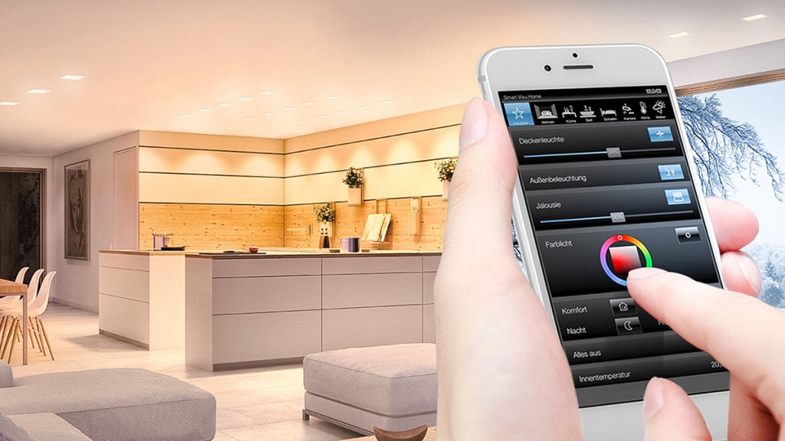
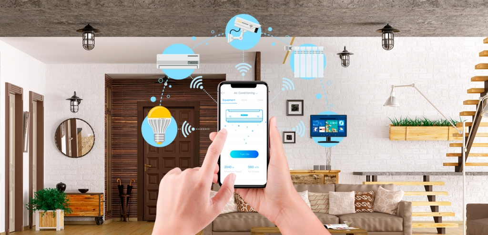
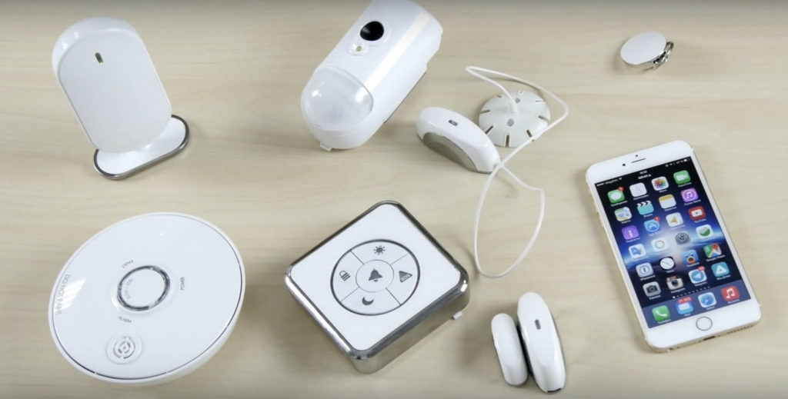
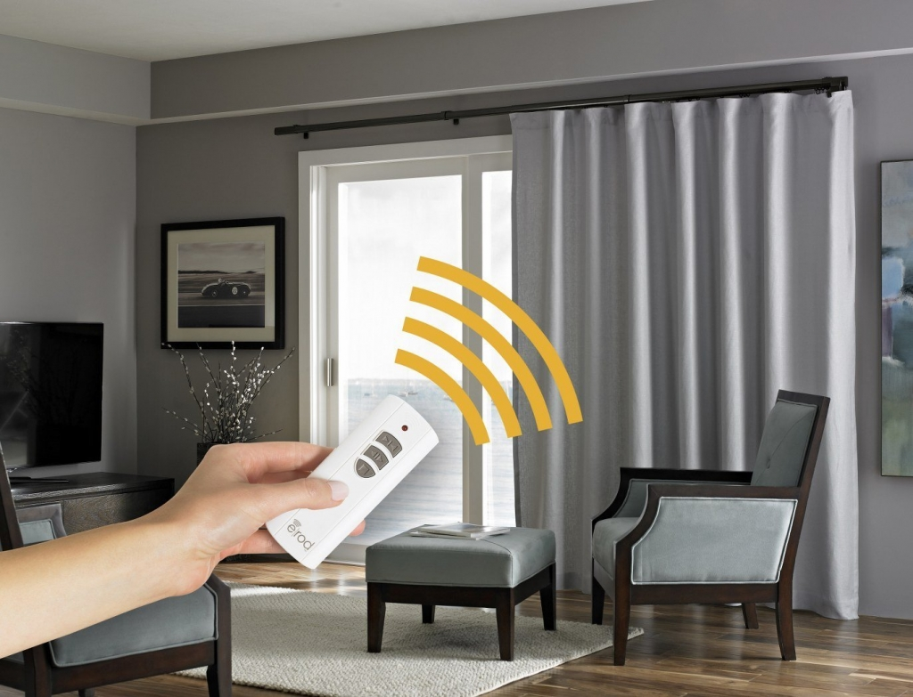
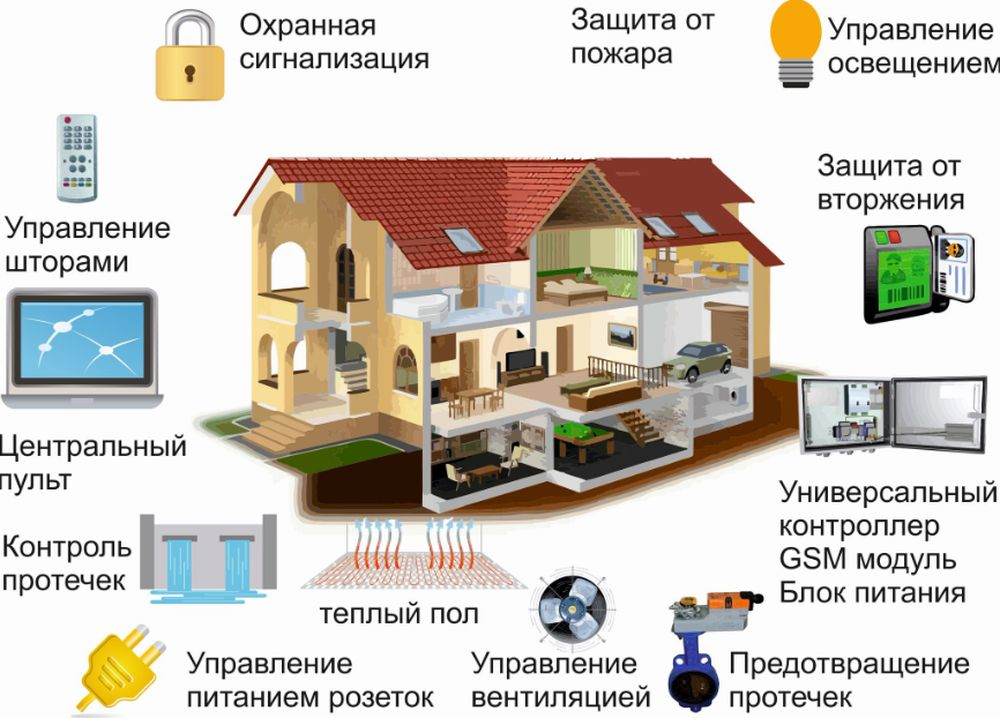
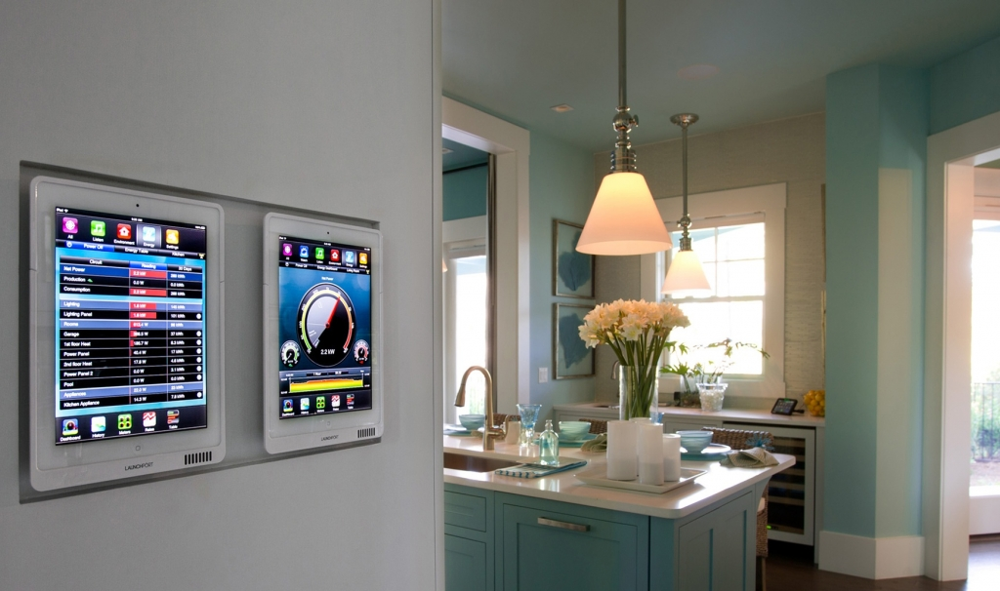

Современные технологии позволяют сделать быт максимально комфортным. Для этого в жилище устанавливается система гаджетов, позволяющая управлять всеми процессами. Перед покупкой подобного комплекса важно разобраться в том, как он работает, из каких частей состоит и так ли он вообще необходим.

Что такое «умный дом»?
Умный дом представляет собой комплекс оборудования, позволяющий быстро решать все бытовые вопросы. Он полностью автоматизирован. Система способна сама принимать решения и выполнять отдельные задачи. Человек может управлять гаджетами путем нажатия кнопок на пульте или в мобильном приложении, а также голосовыми командами.
В зависимости от особенностей самой системы к ней может подключаться бытовая техника, мультимедийное оборудование, аппаратура для контроля климата в помещении и прочие устройства. Имеется возможность управления и комплексом безопасности: сигнализацией, камерами слежения.
Для частных коттеджей разработана система «умное здание». Помимо прочего она позволяет отслеживать состояние отопления, водоснабжения, контролировать подачу газа и так далее. По сути это расширенная версия смарт-дома.
Подобные системы сегодня стоят недешево. Цены начинаются от 100 – 120 тысяч рублей в зависимости от комплектации и возможностей оборудования.

История появления
Впервые о создании системы умный дом заговорили в 1961 году. Разработки того времени по сегодняшним меркам кажутся примитивными. Тогда стали появляться первые модули, подключающиеся к электропроводке. С их помощью удавалось регулировать освещение в квартире, включать и выключать некоторые приборы. Все это выглядело очень громоздко, блок управления занимал много места.
В 1966 годы был запатентован первый компьютер, который позволял задавать определенное время включения бытовых приборов. Его также можно было подключать к сигнализации и камерам слежения.
Прорыв в этой области датируется 1978 годом. Шотландская фирма Pico Electronics представила шину, предназначенную для автоматизации бытовых процессов. Подсоединять ее можно было к любым приборам.
На массовый рынок системы умный дом стали попадать только в 1999 году. Революцию произвела компания Apple. Она первая предложила программное обеспечение для смартфонов, при помощи которого удавалось управлять бытовой техникой.

Что умеет система умный дом?
Умная система включает в себя набор датчиков, которые отслеживают работу всех подключенных устройств. Информация стекается на единый пульт управления. Полный перечень функций такого комплекса зависит от конкретной модификации. Среди самых популярных возможностей выделяют:
-
Дистанционное управление бытовой техникой. Можно программировать время ее включения, выбирать режимы работы и так далее.
-
Контроль функционирования инженерных систем: отопления, водоснабжения, вентиляции и прочих. Благодаря этому удается регулировать температуру воздуха и влажность в помещении, освещенность и другие параметры.
-
Разрешение доступа в здание. Система подключается к сигнализации и запорным устройствам на дверях. При несанкционированном проникновении она оповестит об этом не только хозяина, но и охранную службу.
-
Видеонаблюдение. Владелец жилища может просматривать записи с камер, находясь в любой точке мира.
-
Управление мультимедиными комплексами.
-
Открывание и закрывание гаражных ворот, жалюзи, рольставен и прочего оборудования.
Современные модели умного дома имеют доступ в интернет. Достаточно подать голосовую команду, и программа запустит поиск нужной информации в сети. А результаты выводятся на телевизор или при помощи проектора на специальный экран.
Сегодня техника помимо прочего научилась отправлять СМС и ММС сообщения своим владельцам. Она информирует о своем включении, неполадках в работе или передает видеозаписи.

Принцип работы умного дома
Ключевым элементом системы становится контроллер. Он собирает и анализирует сигналы со всех датчиков, размещенных в квартире. Его работа не останавливается ни на минуту.
Контролер позволяет управлять всеми подключенными гаджетами в режиме реального времени, а также планировать отсроченный запуск. Достаточно единожды задать системе нужные параметры, и она будет постоянно их поддерживать.
Но при всех достоинствах такое оборудование имеет и ряд недостатков. Как и любая техника, оно может давать сбой и зависать. Поэтому может потребоваться ее перезагрузка и новая настройка. Иногда для этого приходится привлекать профессионалов.
По типу передачи сигналов от датчиков системы делятся на проводные и беспроводные. В первом случае все компоненты соединяются друг с другом кабелями. Проводные системы отличаются надежностью, высокой скоростью отклика и большим сроком службы. В беспроводных комплексах сигнал передается по выделенному радиоканалу. Это позволяет упростить и ускорить монтаж конструкции.

Исходя из способа управления, умные дома делятся на:
-
Централизованные. Вся информация собирается в одном логическом модуле. Его роль чаще выполняет контролер, имеющий большое число входов. На него записывается программа, с помощью которой осуществляется управление приборами. Такая конструкция позволяет создавать сложные сценарии функционирования техники.
-
Децентрализованные. Каждое устройство оснащается отдельным микропроцессором. При выходе из строя одного элемента, остальные продолжают работать в штатном режиме. Децентрализованные системы надежны и долговечны.
-
Комбинированные. Состоят из одного центрального блока и нескольких децентрализованных модулей управления. Такая конструкция легко настраивается, а потому сегодня ее предпочитают использовать большинство производителей.
Классифицировать умные дома можно и по типу протокола: открытые и закрытые. Протоколом называют язык, при помощи которого все устройства коммутируются друг с другом. Большинство производителей работают с открытым протоколом. Те компании, которые хотят снизить стоимость своих изделий и внедрить какие-либо нестандартные решения используют закрытый протокол.
